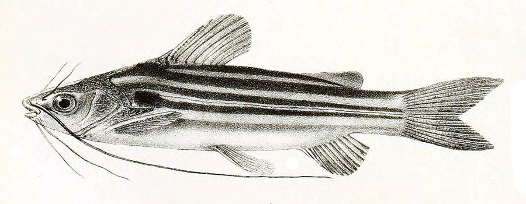

टेंगराStriped Catfish
Mystus vittatus · Bagridae · FSH-0008

- Scientific name
- Mystus vittatus (Bloch, 1794)
- Family
- Bagridae
- Hindi
- टेंगरा
- Status here
- native
- IUCN
- LC
When to look कब देखें
Present all year.
टेंगरा / Striped Catfish
Mystus vittatus (Bloch, 1794) — Bagridae
टेंगरा — उत्तर प्रदेश के तालाबों, पोखरों, धान के खेतों और नहरों में पाई जाने वाली एक अत्यंत आम और छोटे आकार की देशी कैटफिश (catfish) है। इसका शरीर छोटा होता है जिसकी लंबाई आमतौर पर 15-18 सेमी से अधिक नहीं होती, लेकिन यह स्थानीय ग्रामीण जैव विविधता और खाद्य सुरक्षा का एक महत्वपूर्ण हिस्सा है। इसके शरीर पर 4-5 स्पष्ट गहरे रंग की अनुदैर्ध्य पट्टियाँ (longitudinal stripes) पाई जाती हैं जो इसकी मुख्य पहचान हैं। इसके सिर पर चार जोड़ी पतली मूंछें (barbels) होती हैं। यह पानी की विभिन्न परिस्थितियों के प्रति अत्यधिक सहनशील होती है और स्थानीय लोग इसे जाल या बांस के बने पारंपरिक जालों (जैसे टापा या बेनी) से पकड़ते हैं।
Quick Identification त्वरित पहचान
| Feature | Description |
|---|---|
| Size & Shape | Small, slender catfish; body length typically ranges from 10–15 cm (rarely exceeds 18 cm) |
| Colour | Silvery-yellow or pale green body with 4–5 parallel dark longitudinal stripes on each side; a distinct dark shoulder spot is present behind the gill opening |
| Barbels | Four pairs of long, thread-like barbels around the mouth, with the maxillary barbels extending past the dorsal or pelvic fin |
| Fins | Dorsal fin has a moderate, sharp spine; pectoral spines are strong and internal edge is serrated; adipose fin is long and distinct |
| Tail Fin | Caudal fin is deeply forked with upper lobe slightly longer, aiding quick movements |
Field tip: Look for a very small, scale-less fish with 4–5 prominent dark horizontal stripes on its silvery-yellow body, a dark spot behind the gill, and long barbels that extend past the middle of its body.
Morphology आकारिकी
Biometrics (typical measurements in the Gangetic plain):
| Measurement | Range |
|---|---|
| Standard length (SL) | 80–140 mm |
| Total length (TL) | 100–180 mm |
| Weight | 20–100 g |
Body: Small, elongated, and compressed posteriorly. The skin is smooth, slimy, and completely scale-less. The back is slightly arched, and the belly is flat.
Head & Mouth: The head is moderate, slightly depressed. The mouth is terminal and transverse. Four pairs of long barbels are present: one pair of nasal (reaching the orbit), one pair of maxillary (very long, extending to or past the pelvic fins), and two pairs of mandibular barbels.
Fins: The dorsal fin has one strong, finely serrated spine. The pectoral fins have a spine that is serrated on its inner margin (inflicting a sharp sting if handled carelessly). The adipose fin is well-developed. Caudal fin is deeply forked.
Vocalisations
Fish do not possess vocal organs and cannot produce true vocalisations.
- Sound production: Stridulatory sounds can be produced using the pectoral girdle when handled or removed from water.
Behaviour & Ecology व्यवहार और पारिस्थितिकी
Mystus vittatus is an extremely hardy and adaptable species. It is nocturnal, hiding among submerged weeds or leaf litter during the day and active at night. It is highly tolerant of low oxygen levels, enabling it to survive in seasonal agricultural ditches and shallow pools.
Larval Stage
The larval stage is aquatic and pelagic.
- Larval development: Eggs are small and scatter over aquatic vegetation. Hatchlings are free-swimming and feed on zooplankton and rotifers.
- Substrate preference: Larvae and fry associate closely with dense submerged aquatic weeds and flooded grasses for cover.
- Larval duration: The transition from egg to independent juvenile takes about 4–5 weeks.
Life Cycle / Phenology जीवन चक्र
- Spawning: Triggered by monsoon rains, occurring from June to August in inundated shallow grasslands and fields.
- Growth: Rapid development; reaches maturity within their first year of life.
- Lifespan: Typically lives 3–5 years.
Host Plants or Prey आहार
Primary food items:
- Invertebrates: Aquatic insect larvae (such as chironomids and mosquito larvae), small crustaceans (daphnia, copepods), and oligochaete worms.
- Detritus: Consumes small quantities of organic detritus and algal films.
Predators / Natural Enemies शत्रु
- Fishes: Predatory fishes like Snakehead Murrel ([FSH-0003 Snakehead Murrel]) and Walking Catfish ([FSH-0004 Walking Catfish]).
- Reptiles: Water snakes like Checkered Keelback and river turtles.
- Birds: Kingfishers (such as [BRD-0022 Pied Kingfisher]), herons, and egrets.
Agricultural / Human Relevance कृषि प्रासंगिकता
Rural Livelihood. Caught in large numbers in rice fields and small ditches, serving as a vital and affordable source of animal protein in rural Uttar Pradesh. It also serves as a biological pest control agent by feeding on mosquito larvae and agricultural insect pests in waterlogged fields.
Expected Locally स्थानीय रूप से अपेक्षित
Not a field record. Written from published accounts for eastern Uttar Pradesh. No confirmed local sighting yet — if you have seen it, that is what the atlas needs.
अभी तक स्थानीय पुष्टि नहीं। यह विवरण प्रकाशित स्रोतों से है, किसी अवलोकन से नहीं।
Extremely common in the village markets (haat) of Basti, sold by local fisherwomen in heaps. Frequently caught in inundated rice paddies during the monsoon using traditional bamboo basket traps (taapa or kooni).
Distribution वितरण
Global range: South Asia (Pakistan, India, Nepal, Bhutan, Bangladesh, Myanmar, Sri Lanka).
In India: Nationwide in freshwater systems, especially abundant in the Gangetic plain.
In Uttar Pradesh: Abundant state-wide in all freshwater habitats.
In Basti district / eastern UP: Found in all village ponds, flooded fields, canals, and major rivers.
Research Questions शोध प्रश्न
Anyone can investigate these | कोई भी इन प्रश्नों की जाँच कर सकता है
- How does the abundance of Striped Catfish vary between pesticide-free and conventional rice fields? — Conduct regular net catches in both field types.
- What is the preference of Striped Catfish for different types of aquatic vegetation for hiding? — Set up choice chambers with local aquatic plants.
- Can you count the number of stripes on local Tengra specimens and see if they vary? / क्या आप स्थानीय टेंगरा मछलियों के शरीर पर धारियों की संख्या गिन सकते हैं और देख सकते हैं कि क्या वे भिन्न होती हैं? — Observe and count stripes on live specimens before releasing.
- Does the presence of Striped Catfish reduce mosquito larvae populations in temporary monsoon pools? — Compare mosquito larvae counts in pools with and without Tengra.
- What traditional traps are used by Basti villagers to catch Tengra in waterlogged fields? / बस्ती के ग्रामीणों द्वारा जलभराव वाले खेतों में टेंगरा पकड़ने के लिए किन पारंपरिक जालों का उपयोग किया जाता है? — Interview local elders and document trap designs.
Similar Species मिलती-जुलती प्रजातियाँ
| Species | How to tell apart | हिंदी |
|---|---|---|
| Mystus cavasius | Lacks the 4-5 longitudinal dark stripes; body is more uniform yellowish-grey; maxillary barbels are longer, reaching caudal fin | पिरवा — कोई धारी नहीं, लंबी मूंछें |
| [FSH-0007 Rita Catfish] | Much larger and heavier; deeply forked tail with a shorter body stripe pattern (pale stripes, not dark ones); only three pairs of barbels | रीता — बड़ा आकार, तीन जोड़ी मूंछें |
| Mystus bleekeri | Longitudinal stripes are fewer and less distinct; body is darker; adipose fin is longer | टेंगरा — कम स्पष्ट धारियां |
Field rule: Small size (under 18 cm), scale-less body with 4–5 dark parallel stripes, and maxillary barbels extending to the pelvic fins identify Mystus vittatus.
Taxonomy & Classification वर्गीकरण
Original description. Marcus Elieser Bloch described this species as Silurus vittatus in 1794 in his work Naturgeschichte der ausländischen Fische (Vol. 8, page 40, pl. 371 fig. 2). Type locality: Tranquebar, India. The genus name Mystus is derived from the Greek mystax, meaning mustache, referring to the long barbels.
Subspecies. Monotypic.
Family and order placement. Placed in the order Siluriformes, family Bagridae.
Phylogenetic notes. Mystus vittatus belongs to the core Mystus species complex, closely related to Mystus bleekeri and Mystus tengara.
IUCN status rationale. Listed as Least Concern (LC). Widespread, highly abundant, and resilient to habitat modifications and environmental pollution.
Photo Gallery फोटो गैलरी
References संदर्भ
- Bloch, M. E. (1794). Naturgeschichte der ausländischen Fische. Vol. 8, Berlin, p. 40, pl. 371 (fig. 2). [original description as Silurus vittatus]
- Talwar, P.K. & Jhingran, A.G. (1991). Inland Fishes of India and Adjacent Countries. Vol. 2. Oxford & IBH Publishing, New Delhi, pp. 573–574.
- Jayaram, K.C. (2006). Catfishes of India. Narendra Publishing House, Delhi, pp. 43–45.
- Ng, H.H. & Kottelat, M. (2013). Revision of the Mystus vittatus species group. Journal of Natural History, 47(11-12), 753–783.
- IUCN SSC Freshwater Fish Specialist Group (2024). Mystus vittatus. IUCN Red List of Threatened Species. Ver. 2024.
- GBIF Occurrence Data — Mystus vittatus, Uttar Pradesh (2010–2025).
Source file: species/fauna/fish/striped_catfish.md